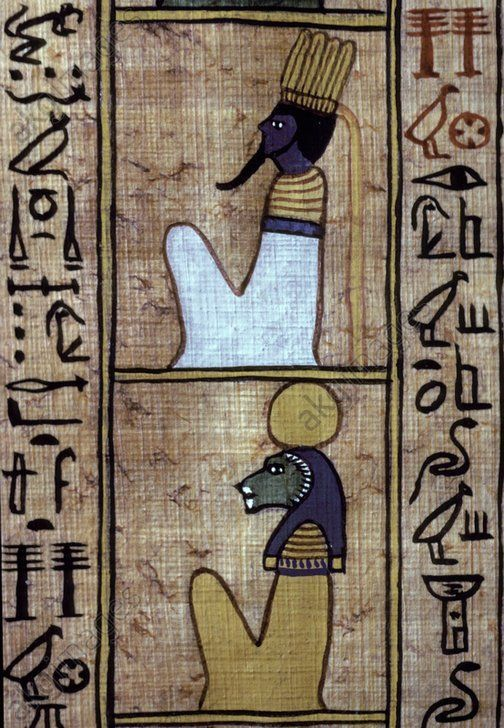
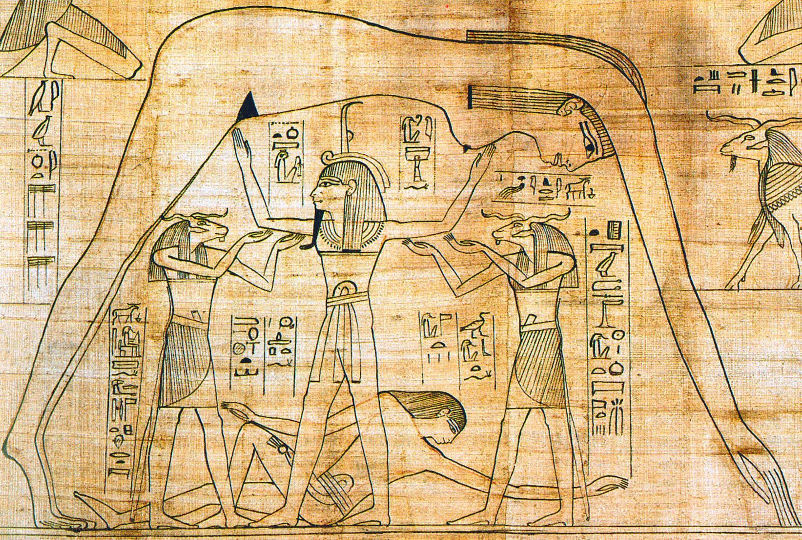
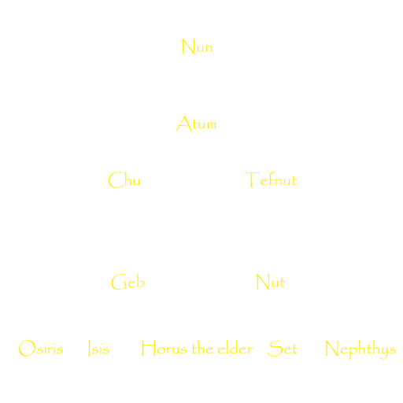

At the very beginning there was a primordial ocean called the Nun, darkness dominated, and nothing existed.
From this primordial ocean emerged Atum or Tem ("He who is complete", "He who is the totality",
"He who is and who is not") the first of the gods who gave himself to him
same birth by becoming aware of its existence. The god then imagines a mound of earth called
the Benben in the middle of the water and it appears so that he can land there. Atum has no partner, so he
unites with itself through onanism, and 2 children are the result of this act: a son Chu ("vital breath" and god of dry air)
and a girl Tefnut (The goddess of humid air). 
This birth has considerable consequences
because Chu is Life, that is, it is life in itself and it is also light. Tefnut is the one
first goddess, the first female being of Creation. She is the wife of her brother Chu. It represents
the warmth of the sun and is a personification of the Maat. Maat appears very early when the Creator takes
consciousness and begins the celestial mechanics. Maat is a metaphysical entity that governs order. Maat is
the Order maintaining a balance between Good and Evil, keeps Chaos out of the way. For the Egyptians, the Good
and Evil are inseparable, one cannot exist and prosper without the other.
The birth of heaven and earth
From the union of Chu and Tefnut were born two children: Geb, the earth and Nut, the sky. From Atum will come out the
sun that will later become Re, the solar god but the latter cannot move normally. So,
To guarantee balance and cosmic order, Atum orders Chu to keep Earth (Geb) and Sky (Nut) separate:
the Universe was then created and little by little, the Nun was relegated to the outside of the new emerging world.

The birth of mankind
The demiurge Atum is the one who gives life to human beings, as he gave it to the first gods. Man does not appear not on earth alone. The Texts of the Sarcophagi (funeral texts of the Middle Kingdom, 2000-1780 before JC) speak to Several times this creation, and especially this short passage: "men are the tears of my eye". One of the most frequent accounts of Man's creation is that men were born from the tears of the eye of the demiurge and Chu breathed life into them.
Nut's children
One of the consequences of the appearance of the sun, of the sky is the 360-day solar race of Re and the creation of the day
and the night. But as you know, a year is 365 days. So there are 5 days left. These last few days
are part of Creation. In fact, Nut pregnant could not give birth during the normal course of the sun,
we had to find a subterfuge. Then, according to a legend, Thoth played with the Moon and won, giving birth to
to the extra five days, allowing Nut to give birth without being worried. 
In fact, these last five days are called "epagomens". This term comes from the Greek epagomena hemera meaning day
additional. In the Egyptian cosmogony, these days are identified with the "children of Nut", five in number:
Isis, Osiris, Set, Nephthys and Horus the Elder (not to be confused with Horus the son of Isis and Osiris). These five deities
will reveal evil deeds to men. So, on the first day, Osiris was born, on the second day, Horus the Elder, then Set,
during the fourth, Isis and finally the last day, Nephthys. These days are not well received by the Egyptians and particularly
the third, that of Set.
The Ennead
It is a group of nine divine entities imagined by the theologians of Heliopolis, symbolizing the forces necessary for the creation of the organized world: the demiurge Atum, its children Chu and Tefnut, its grandchildren Geb and Nut and their descendants except Horus the elder: the two couples Isis and Osiris, Nephtys and Seth.
The forces of chaos
When the creator becomes aware of himself, let us remember that the Nun had the necessary ingredients for creation.
But to accomplish his task, Atum isn't alone, snakes will help him, but these beasts are dangerous when the world exists
because they belong to the Nun, Chaos threatening the cosmic order. And when Re, the sun, leaves the day sky to enter
in the darkness of the night, he must, on his solar boat, make a 12-hour journey before being reborn at dawn. One of the enemies of the sun is the
giant snake Apophis, born in the heart of the Nun. Increated as Atum, Apophis cannot be destroyed. It can only be neutralized.